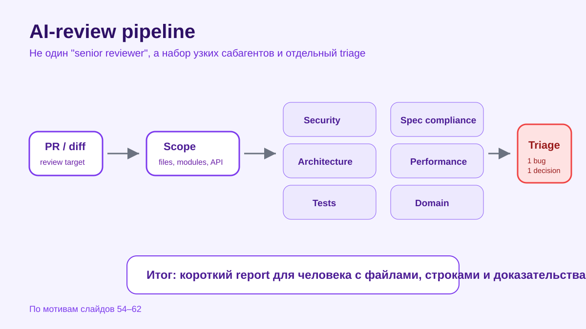
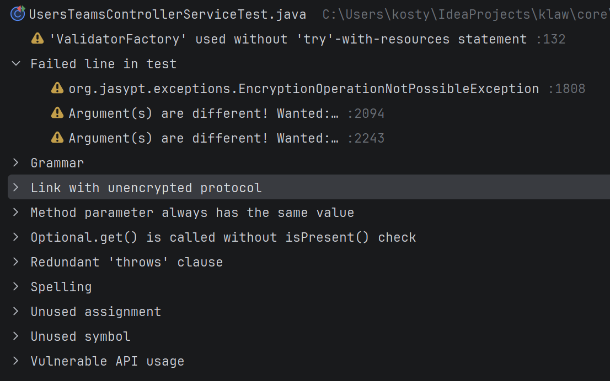
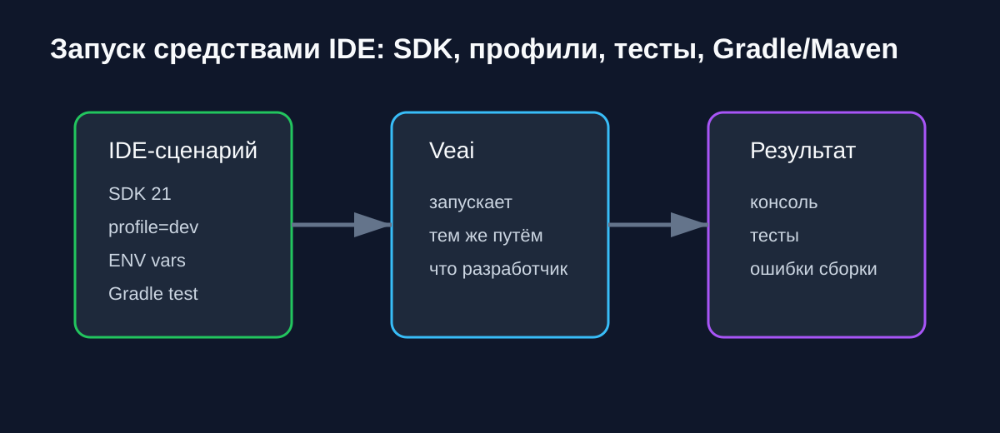
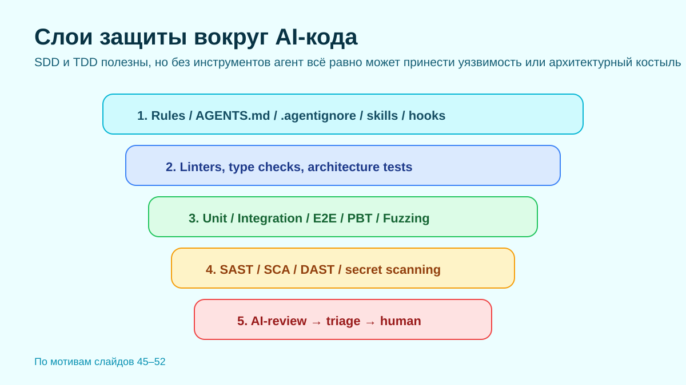

Предмет и основной тезис статьи
С быстрым распространением LLM-assisted coding (разработка с помощью больших языковых моделей) управление техническим долгом, который вносят такие системы, становится срочной инженерной задачей. Статья исследует, как разработка с участием LLM способствует накоплению долга и какие стратегии, метрики, инструменты и бенчмарки обсуждаются для его снижения.
Основной вывод: LLM усиливают традиционные формы технического долга - прежде всего кодовый, проектный и документационный, - и одновременно создают новые LLM-specific категории: долг быстрой интеграции (fast-integration debt), долг промптов (prompt debt), этический долг (ethical debt), долг данных (data debt) и долг происхождения решений (provenance debt).
Для инженерной команды это означает: ИИ-код нельзя принимать только по признаку «собралось и выглядит правдоподобно». Нужен контур верификации, который связывает diff с зависимостями, тестами, покрытием, статическим анализом, конфигурации запуска (run configurations) и рантайм-контекстом проекта.


рис.1. Где быстрый ИИ-код превращается в долг
без проверки
рис.2. Скорость без проверки создаёт скрытую стоимость
Выигрыш появляется не от генерации самой по себе, а от связки: генерация → проверка → объяснимое принятие изменения.
Мультивокальный обзор литературы
Авторы проводят мультивокальный обзор литературы (Multivocal Literature Review) по 104 источникам: 31 формальной публикации и 73 материалам из серая литература (grey literature). Такой дизайн нужен, потому что академические публикации отстают от практики внедрения LLM, а индустриальные блоги, отчёты и кейсы быстрее фиксируют ранние признаки долга.
Исследование отвечает на пять вопросов: какие виды долга возникают в LLM-generated code; какие стратегии предлагаются для снижения долга; какие инструменты помогают обнаруживать или измерять его; существуют ли бенчмарки; достаточно ли текущих метрик технический долг (technical debt) для LLM-кода.
Технически важная деталь: работа разделяет не только традиционные признаки долга (debt smells), но и долги процесса - governance, прослеживаемость (traceability) и воспроизводимость (reproducibility). Поэтому инструмент для AI-разработки должен помогать не просто «сгенерировать код», а сохранить проверяемый путь от задачи до принятого изменения.
Что показывает корпус источников
RQ1. LLM чаще всего усиливают кодовый, проектный и документационный долг. Причины - слабое тестирование, неполная проверка, нестабильность генерации, дублирование, галлюцинированные ссылки и неявные предположения в сгенерированном коде.
RQ2. Для снижения риска чаще всего упоминаются человек в контуре проверки (human-in-the-loop) практики, инженерия промптов (prompt engineering), контроль качества данных, код-ревью (code review), статический анализ и организационные правила принятия ИИ-кода.
RQ3-RQ5. Практики в основном используют общие инструменты вроде SonarQube и code-smell detectors. При этом стандартизированных LLM-specific метрик, датасетов и бенчмарков для оценки долга пока нет.
Практический вывод для Veai. Продуктовая ценность не в том, чтобы заменить ревью ещё одним чат-ответом, а в том, чтобы подключить агента к JetBrains IDE и дать ему проверяемые сигналы: компиляцию, тесты, coverage, PSI-структуру, зависимости, конфигурации запуска и runtime-данные.


Почему быстрый код требует отдельного контроля
Авторы подчёркивают, что долг быстрой интеграции (fast-integration debt) опасен именно потому, что выглядит как продуктивность: код появляется быстрее, но команда может позже заплатить за слабую архитектуру, неясное происхождение решений, нехватку тестов и управленческие пробелы.
Ограничение исследования - зависимость от доступных источников и качества серая литература (grey literature). Тем не менее именно сочетание формальных и индустриальных материалов позволяет увидеть ранние сигналы долга до того, как они полностью оформятся в академические метрики.
Экспертное мнение Veai: самая дорогая ошибка ИИ-разработки - принять скорость за качество. Veai работает внутри JetBrains IDE и сверяет изменения с фактами проекта - сборкой, тестами, зависимостями, статическим анализом, покрытием и рантайм-контекстом. Это помогает не просто быстрее писать код, а раньше видеть долг, который иначе проявится уже в продакшене.
Коротко для CTO и тимлидов
- LLM ускоряют разработку, но без проверки могут ускорять накопление технический долг (technical debt).
- Fast-integration debt опасен тем, что выглядит как продуктивность на короткой дистанции.
- Классическое ревью нужно дополнять фактами IDE: сборкой, тестами, зависимостями, покрытием и анализом.
- Ключевой KPI ИИ-инструмента - не только скорость генерации, но и способность снижать риск изменений.
Перевод подготовлен технической командой Veai на основе arXiv:2606.14796.